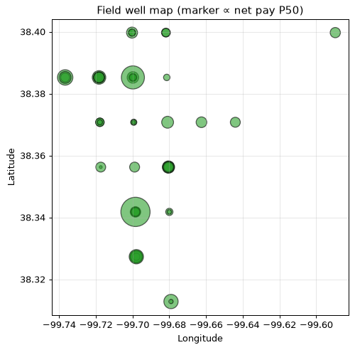
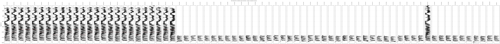

Selection (agent-chosen): ['1057018896', '15-135-24,857-00-00', '15-135-24,859-00-00', '15-135-24,881-00-00', '15-135-24,937-00-00', '15-135-24,938-00-00', '15-135-24,974-00-00', '15-135-25,105-00-00', '15-135-25,341-00-00', '15-135-25,342-00-00----', '15-135-25,399-00-00', '15-135-25,602-00-00', '15-135-25310-00-00', '15-135-25402-00-00', '15-135-25458-00-00', '15-135-25486-00-00', '15-135-25545-00-00', '15-135-25872-00-00', '15-135-25930-00-00', '15-135-25945-00-00', '15-135-25954-00-00', '15-135-25982-0000', '15-135-25990-00-00', '15-135-26002-00-00', '15-135-26214-00-00']. Class-A: every triple-combo well (deduplicated, best file kept). The vintage class-B wells are reported in their own labeled chapter below.
The full analyzable Schaben inventory — 72 wells after deduplication — is evaluated in two labeled classes: 25 class-A triple-combo wells over their consolidated blocks and 47 class-B vintage wells (count-rate neutron porosity, sonic-validated transform) over their deep-only logged intervals. Every number is engine-computed and bracketed by regional-default parameters; abstentions are declared, never dressed up.
Cross-well net pay P50 (NOT a sum — wells are not stacked): mean 22.7 m, median 22.1 m, range 0.0–46.6 m across 25 wells. NTG mean 0.100.
| Well | Status | Tier | Net pay P50 (m) | NTG | Avg PHIE | Avg Sw | Obj |
|---|---|---|---|---|---|---|---|
| 1057018896 ⚠️ | DID_NOT_CONVERGE | bracketed | 25.3 | 0.086 | 0.170 | 0.302 | 2 |
| 15-135-24,857-00-00 ⚠️ | DID_NOT_CONVERGE | bracketed | 19.7 | 0.008 | 0.304 | 0.463 | 2 |
| 15-135-24,859-00-00 ⚠️ | DID_NOT_CONVERGE | bracketed | 26.7 | 0.086 | 0.348 | 0.386 | 4 |
| 15-135-24,881-00-00 ⚠️ | DID_NOT_CONVERGE | bracketed | 35.3 | 0.143 | 0.180 | 0.322 | 2 |
| 15-135-24,937-00-00 ⚠️ | DID_NOT_CONVERGE | bracketed | 46.6 | 0.195 | 0.284 | 0.285 | 3 |
| 15-135-24,938-00-00 ⚠️ | DID_NOT_CONVERGE | bracketed | 10.9 | 0.079 | 0.159 | 0.329 | 2 |
| 15-135-24,974-00-00 ⚠️ | DID_NOT_CONVERGE | bracketed | 30.9 | 0.137 | 0.285 | 0.300 | 3 |
| 15-135-25,105-00-00 ⚠️ | DID_NOT_CONVERGE | bracketed | 12.8 | 0.082 | 0.161 | 0.332 | 2 |
| 15-135-25,341-00-00 ⚠️ | DID_NOT_CONVERGE | bracketed | 8.7 | 0.047 | 0.188 | 0.353 | 2 |
| 15-135-25,342-00-00---- ⚠️ | DID_NOT_CONVERGE | bracketed | 14.8 | 0.064 | 0.214 | 0.283 | 2 |
| 15-135-25,399-00-00 ⚠️ | DID_NOT_CONVERGE | bracketed | 9.8 | 0.039 | 0.170 | 0.350 | 2 |
| 15-135-25,602-00-00 | CONVERGED | bracketed | 0.0 | 0.000 | — | — | 0 |
| 15-135-25310-00-00 ⚠️ | DID_NOT_CONVERGE | bracketed | 17.7 | 0.101 | 0.231 | 0.311 | 2 |
| 15-135-25402-00-00 ⚠️ | DID_NOT_CONVERGE | bracketed | 10.7 | 0.060 | 0.195 | 0.336 | 2 |
| 15-135-25458-00-00 ⚠️ | DID_NOT_CONVERGE | bracketed | 33.5 | 0.174 | 0.280 | 0.268 | 3 |
| 15-135-25486-00-00 ⚠️ | DID_NOT_CONVERGE | bracketed | 36.1 | 0.183 | 0.273 | 0.273 | 3 |
| 15-135-25545-00-00 ⚠️ | DID_NOT_CONVERGE | bracketed | 31.6 | 0.132 | 0.223 | 0.289 | 2 |
| 15-135-25872-00-00 ⚠️ | DID_NOT_CONVERGE | bracketed | 13.0 | 0.078 | 0.196 | 0.313 | 2 |
| 15-135-25930-00-00 ⚠️ | DID_NOT_CONVERGE | bracketed | 38.3 | 0.178 | 0.204 | 0.305 | 2 |
| 15-135-25945-00-00 ⚠️ | DID_NOT_CONVERGE | bracketed | 18.9 | 0.130 | 0.175 | 0.301 | 2 |
| 15-135-25954-00-00 ⚠️ | DID_NOT_CONVERGE | bracketed | 22.1 | 0.107 | 0.213 | 0.349 | 2 |
| 15-135-25982-0000 ⚠️ | DID_NOT_CONVERGE | bracketed | 34.1 | 0.141 | 0.246 | 0.334 | 2 |
| 15-135-25990-00-00 ⚠️ | DID_NOT_CONVERGE | bracketed | 27.0 | 0.125 | 0.216 | 0.312 | 2 |
| 15-135-26002-00-00 ⚠️ | DID_NOT_CONVERGE | bracketed | 22.1 | 0.062 | 0.180 | 0.341 | 2 |
| 15-135-26214-00-00 ⚠️ | DID_NOT_CONVERGE | bracketed | 20.6 | 0.062 | 0.170 | 0.353 | 2 |
Field well map (PLSS grid, section-center precision ±1.6 km)

Normalized GR correlation panel

The field reads as a laterally continuous tight Mississippian carbonate with thin stacked pay in the deep consolidated block, now mapped across the full inventory. Class-B wells triple the spatial coverage at the cost of a declared structural porosity approximation. Confidence remains capped by data — core calibration and produced-water resistivity would lift most abstentions.
Logged deep-section only (no overburden on record); porosity from the two-point count-rate transform with engine-derived anchors, VALIDATED against sonic porosity on 8 offset wells (median r=0.80, MAD=0.032). Every value is a structural approximation: bracketed tier, wide bands, never mixed unlabeled with class-A.
| Well | Net pay P50 (m) | Avg PHIE | Abstain | Anchors OK |
|---|---|---|---|---|
| 1001178692 | 40.2 | 0.188 | ⚠️ | yes |
| 1001178734 | 2.0 | 0.137 | ⚠️ | yes |
| 1001178749 | 20.6 | 0.198 | ⚠️ | yes |
| 1001178750 | 26.4 | 0.198 | ⚠️ | yes |
| 1001178775 | 19.7 | 0.147 | ⚠️ | yes |
| 15-135-00358 | 4.9 | 0.146 | ⚠️ | yes |
| 15-135-00465 | 18.9 | 0.161 | ⚠️ | yes |
| 15-135-00505 | 10.2 | 0.129 | ⚠️ | yes |
| 15-135-00612 | 47.2 | 0.186 | ⚠️ | yes |
| 15-135-20196 | 15.1 | 0.172 | ⚠️ | yes |
| 15-135-20215 | 38.3 | 0.196 | no | yes |
| 15-135-20230 | 18.3 | 0.154 | ⚠️ | yes |
| 15-135-20280 | 6.2 | 0.133 | ⚠️ | yes |
| 15-135-20292 | 23.2 | 0.162 | ⚠️ | yes |
| 15-135-20917 | 50.4 | 0.217 | ⚠️ | yes |
| 15-135-21155 | 18.4 | 0.18 | no | yes |
| 15-135-21227 | 18.7 | 0.14 | no | yes |
| 15-135-21228 | 9.8 | 0.171 | ⚠️ | yes |
| 15-135-21261 | 39.6 | 0.195 | no | yes |
| 15-135-21291 | 9.3 | 0.149 | ⚠️ | yes |
| 15-135-21293 | 22.4 | 0.195 | ⚠️ | yes |
| 15-135-21296 | 13.1 | 0.205 | no | yes |
| 15-135-21341 | 8.2 | 0.18 | ⚠️ | yes |
| 15-135-21365 | 14.9 | 0.182 | no | yes |
| 15-135-21441 | 28.5 | 0.243 | ⚠️ | yes |
| 15-135-21593 | 15.5 | 0.186 | ⚠️ | yes |
| 15-135-21728 | 27.7 | 0.192 | ⚠️ | yes |
| 15-135-21749 | 9.4 | 0.171 | ⚠️ | yes |
| 15-135-21779 | 10.2 | 0.181 | ⚠️ | yes |
| 15-135-22001 | 19.4 | 0.218 | ⚠️ | yes |
| 15-135-22058 | 26.2 | 0.19 | no | yes |
| 15-135-22141 | 16.0 | 0.202 | ⚠️ | yes |
| 15-135-22165 | 25.5 | 0.205 | ⚠️ | yes |
| 15-135-22665 | 15.1 | 0.189 | ⚠️ | yes |
| 15-135-22865 | 12.8 | 0.214 | ⚠️ | yes |
| 15-135-23133 | 7.3 | 0.263 | ⚠️ | yes |
| 15-135-25697-00-00 | 176.0 | 0.302 | ⚠️ | SUSPECT (outlier — read as unreliable) |
| 15-135-30014 | 10.4 | 0.168 | ⚠️ | yes |
| 15-135-30251 | 25.0 | 0.157 | ⚠️ | yes |
| 15-135-30308 | 21.5 | 0.155 | ⚠️ | yes |
| 15135213310000 | 9.6 | 0.165 | ⚠️ | yes |
| 1513521383 | 13.7 | 0.217 | no | yes |
| 1513521395 | 9.4 | 0.181 | no | yes |
| 99000000110000 | 24.8 | 0.179 | ⚠️ | yes |
| 99000000220000 | 24.4 | 0.149 | ⚠️ | yes |
| 99000000270000 | 9.1 | 0.189 | ⚠️ | yes |
| UNKNOWN | 10.2 | 0.129 | ⚠️ | yes |
1 well(s) flagged SUSPECT: transform anchors likely mis-set by an atypical count-rate histogram; their rows are not evidence of thick pay.
Class A (triple-combo, zoned) (25 wells):
Class B (vintage, labeled) (47 wells):
Authored by claude-fable-5-session as a CONTAMINATED ceiling demo (the analyst knew this project's findings). Not a leaderboard entry.
v2→v3 of this report: SP-derived Rw evidence on every class-A well with an SP curve (the dominant uncertainty now carries an independent measurement and a declared MC band), the Rxo/Rt movable-hydrocarbon index, zone-true gross/NTG (a v11-investigation fix), and labeled class-B outlier hygiene.
v1→v2 of this report: 25 → 72 wells (47 vintage unlocked by the validated count-rate transform); the field gains its PLSS map, measured-BHT Arps evidence, invasion profiles, service-porosity cross-checks and the microlog indicator.
The zone was the whole game (unchanged verdict). Every measured agent averaged the full logged column, inflating porosity into a plausibility abstention on every Kansas report. Zoned, the same engine reads realistic rock (class-A net pay P50 36.0 m). qwen3-max's historic first zone (well 24,938: 265.5–353.6 m) remains adjudicated as committed-but-wrong — unconsolidated rock; the consolidated block starts near 1000 m.
What separated this report from every measured agent was not compute, prompts or tools — it was knowing WHERE the reservoir is and WHAT each curve can and cannot say. That judgment remains the human petrophysicist's seat.